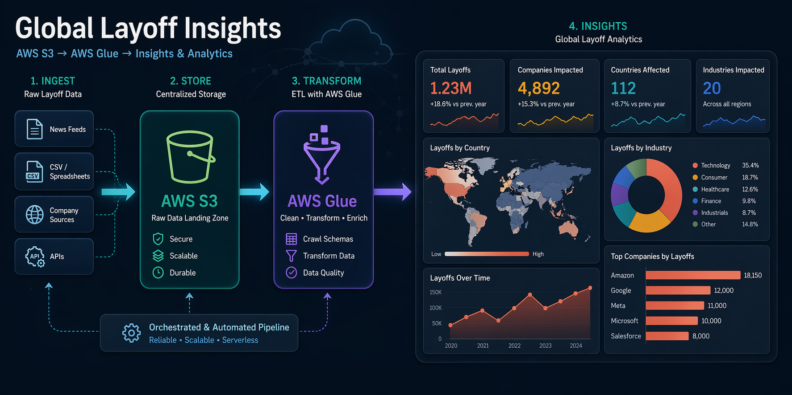

Incident response, root cause isolation, and customer-facing troubleshooting.
Years of support thinking taught me to calm noisy situations, narrow failure domains, and communicate clearly while systems are still moving.
My background is rooted in technical support engineering: troubleshooting Linux, SaaS, cloud, API, and customer-facing issues under pressure. That foundation now shapes how I approach data engineering, from ETL pipelines and SQL modeling to Snowflake, AWS, and analytics workflows built for clarity and trust.
I care about systems that are observable.
Years of support thinking taught me to calm noisy situations, narrow failure domains, and communicate clearly while systems are still moving.
I’m applying that same discipline to data workflows that clean inputs, model useful outputs, and surface signals teams can actually act on.
The throughline in my work is simple: understand what broke, understand what matters, and build something more dependable on the other side.
This section centers the support engineering side of my experience: incident response, systems troubleshooting, observability, customer communication, and the tooling I use to stabilize environments quickly.
Working through Linux, network, cloud, API, and application issues has trained me to narrow failure domains quickly and verify fixes methodically.
I look for the signals behind incidents: logs, integration failures, stale data, auth issues, unexpected drops, and customer-facing symptoms.
Support work sharpened how I explain technical problems, document next steps, and keep both internal teams and external stakeholders aligned.
Hands-on support capabilities for triaging issues, isolating root causes, and driving clear resolution paths.
Foundational systems knowledge used to investigate service behavior across applications and infrastructure.
Platform awareness across cloud services, SaaS tools, and integrations that affect uptime and user experience.
Tools I use to manage tickets, collaborate with teams, and keep issue resolution organized.
These projects highlight the data engineering side of my work: building ingestion and transformation workflows, modeling analytics-ready datasets, and surfacing insights through dashboards and reporting layers.
The thread across my data engineering work is consistent: land noisy data, shape it into reliable models, and surface it in a form that helps teams spot risk, understand trends, and move with confidence.
Start with fragmented customer, public health, or operational records and build a landing path that keeps raw context intact.
Use Python, SQL, Snowflake, and cloud tooling to clean, transform, and structure the data into dependable tables.
Turn the output into dashboards, sentiment views, and trend analysis that explain what changed and why it matters.
Design with reliability in mind so the data stays useful under operational pressure, not just in a perfect demo.
Production-grade customer analytics pipeline processing 2M+ customer interactions with AWS, Snowflake, and dbt, using Cortex AI to analyze sentiment across 36,621 conversations and deliver structured, insight-ready data.
Most support conversations are problem-driven, making resolution quality more important than speed alone.
Hover signal: slower response can hurt, but the issue type and resolution experience drive sentiment more strongly.
A portfolio project focused on connecting AI, data processing, and customer analytics into a cleaner workflow for downstream analysis and reporting.
This project analyzes drug-related deaths across the United States from 2012 to 2024. I cleaned and prepared public health data in Python, modeled annual and demographic trends in Snowflake, and developed a Tableau story highlighting age-group patterns, geographic burden, and substance-level impact.
This dashboard examines why shortages occur, which therapeutic areas are most affected, how long shortages persist, and which root causes create the most operational workload. It reflects the same mindset I use in support engineering: identify failure patterns, quantify impact, and surface the next best response quickly.
This project uses AWS S3 and AWS Glue to process layoff data into a structured insights workflow. It surfaces company, industry, country, and time-based trends so workforce events can be explored through a cleaner cloud pipeline instead of one-off analysis.

Open to data engineering, technical support engineering, analytics, BI, and cloud-focused opportunities where clear thinking matters as much as technical execution.
Ottawa, Ontario